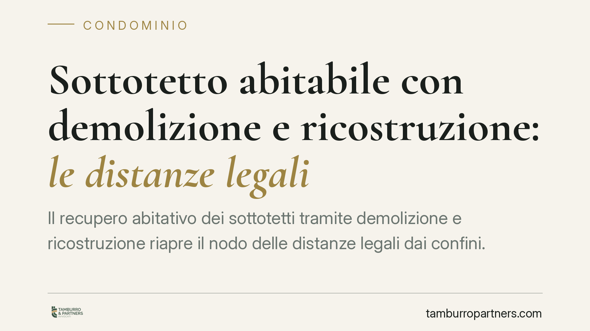

Sottotetto abitabile con demolizione e ricostruzione: le distanze legali
Il recupero abitativo dei sottotetti tramite demolizione e ricostruzione riapre il nodo delle distanze legali dai confini. Quando l'intervento resta nel perimetro della ristrutturazione, la giurisprudenza tende a valorizzare l'assetto dell'edificio preesistente. Ma i margini sono stretti e dipendono da sagoma, sedime e volume. Vediamo cosa cambia per proprietari e vicini confinanti.

Il caso e il contesto
Il tema è ricorrente nei contenziosi tra vicini: un proprietario recupera il sottotetto rendendolo abitabile attraverso un intervento di demolizione e ricostruzione. Il confinante lamenta la violazione delle distanze legali, sostenendo che il nuovo fabbricato debba rispettare i limiti oggi vigenti. Il proprietario replica che si tratta di ristrutturazione e che l'edificio riproduce quello preesistente.
La questione non è astratta. Con il cosiddetto Salva Casa — il D.L. 69/2024, convertito con modificazioni dalla L. 105/2024 — il legislatore ha ampliato le possibilità di recupero abitativo dei sottotetti, rinviando alle discipline regionali (ad esempio quelle adottate da alcune Regioni). Questo ha rilanciato interventi che, sul piano delle distanze, restano delicati.
> Nota di trasparenza: la giurisprudenza di legittimità sul punto è in continua evoluzione. Prima di fondare una scelta su una singola pronuncia occorre verificarne numero, anno e massima effettiva presso le fonti ufficiali. In questo contributo esponiamo l'orientamento generale, non una decisione specifica non verificabile.
Inquadramento normativo
Due sono le norme di riferimento.
La prima è l'art. 9 del D.M. 1444/1968, che fissa le distanze minime tra pareti finestrate di edifici antistanti (di regola dieci metri). È una norma di ordine pubblico: non è derogabile per volontà delle parti.
La seconda è l'art. 3, comma 1, lett. d), del d.P.R. 380/2001, che definisce la "ristrutturazione edilizia". Vi rientrano anche gli interventi di demolizione e ricostruzione, purché — ed è il punto cruciale — ricorrano le condizioni che la legge e la giurisprudenza richiedono per non qualificare l'opera come nuova costruzione. A completare il quadro interviene l'art. 2-bis del d.P.R. 380/2001, che disciplina il regime delle distanze in rapporto agli strumenti urbanistici e alla pianificazione.
Il principio, in termini prudenti, è questo: quando la ricostruzione riproduce l'edificio preesistente con identità di sagoma, sedime e volume, l'intervento può conservare il regime delle distanze proprio del fabbricato originario. Quando invece la ricostruzione avviene con diversa sagoma, diverso sedime o incremento volumetrico, l'orientamento consolidato tende a richiedere il rispetto delle distanze oggi vigenti, perché in quel caso si è di fronte a un manufatto sostanzialmente nuovo.
Implicazioni pratiche
La distinzione ha ricadute concrete e opposte a seconda della posizione.
Per il proprietario che recupera il sottotetto, il margine per invocare le distanze dell'edificio originario esiste solo se il progetto rimane fedele al preesistente. Ogni scostamento — un ampliamento in altezza, uno spostamento del sedime, un aumento di volumetria — sposta l'intervento verso la nuova costruzione, con applicazione integrale dell'art. 9.
Per il vicino confinante, lo spazio di contestazione si apre proprio là dove la ricostruzione ha modificato l'assetto originario. Non basta lamentare genericamente l'avvicinamento: occorre dimostrare, tecnicamente, che l'opera ha superato i confini della ristrutturazione.
Va infine segnalato un profilo spesso sottovalutato. Se l'intervento eccede il titolo edilizio o viola le distanze in assenza di legittimazione, può configurarsi un rilievo penale ai sensi dell'art. 44 del d.P.R. 380/2001, che sanziona le violazioni della disciplina urbanistico-edilizia. L'aspetto civilistico delle distanze e quello penale dell'abuso possono così sovrapporsi nello stesso cantiere.
Cosa fare in concreto
- Verificare la qualificazione dell'intervento. Accertare se demolizione e ricostruzione mantengano identità di sagoma, sedime e volume rispetto all'edificio originario: da questo dipende il regime delle distanze applicabile.
- Controllare il titolo abilitativo e la disciplina regionale. Il recupero dei sottotetti passa dalle norme regionali di attuazione: leggerle prima di progettare, non dopo.
- Documentare lo stato ante e post operam. Rilievi, elaborati grafici e computo delle distanze costituiscono la prova decisiva in un eventuale contenzioso.
- Valutare il profilo penale. Dove l'opera rischi di eccedere il titolo, considerare fin dall'inizio le implicazioni dell'art. 44 d.P.R. 380/2001.
Per il vicino confinante è opportuna una verifica tecnica sulla reale portata dei lavori prima di agire: un'azione fondata su una qualificazione errata dell'intervento rischia di rivelarsi inefficace.
---
Contributo informativo a cura di Tamburro & Partners Avvocati. Non costituisce parere legale.
Ogni condominio ha una storia a sé.
Se gestisci un'amministrazione e vuoi un confronto su una specifica questione condominiale, scrivi allo studio. Ti rispondiamo entro un giorno lavorativo.